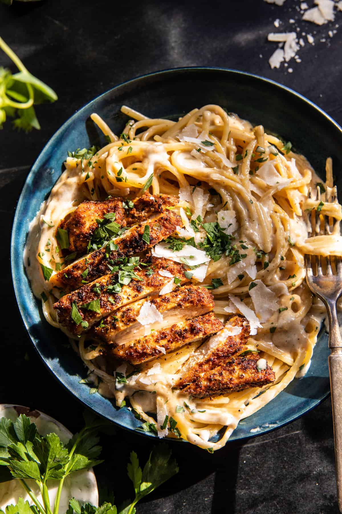

Lemon Pepper Chicken Alfredo

A twist upon on the classic chicken alfredo dish, where we will be adding cajun spices to the cream sauce, and seasoning our chicken with lemon pepper spices. This will add both a kick and acidic edge to the traditionally rich pasta dish.
Ingredients
- 1 lb fettuccini
- 1 Tbsp extra virgin olive oil
- 6 chicken cutlets
- 2 Tbsps cajun seasoning
- 1 1/2 cups, plus 2 Tbsps of parmesan cheese
- 4 Tbsps salted butter
- Kosher salt and ground black pepper
- 3 cloves of chopped garlic
- Crushed red pepper flakes
- 2 Tbsps lemon juice
- 1 cup low sodium chicken broth
- 1 cup heavy cream
- 2 Tbsps chopped fresh parsley
Steps
- Bring a large pot of salted water to a boil, then cook according to package instructions, drain afterwards.
- In a bowl, add olive oil, chicken, cajun seasoning, 2 Tbsps parmesan, and a big pinch of pepper, then toss together.
- Melt 2 Tbsps butter in a large pan over medium-high heat, then add chicken and sear on both sides until golden. Then turn off heat and add lemon juice.
- To the same pan, add 2 Tbsps butter, garlic, and chili flakes. Cook for 1 minute before adding the broth and milk, then whisk until smooth.
- Add and stir in 1 1/2 cups parmesean and toss pasta in it. Continue cooking for 2 minutes.
- Remove from heat and serve with parsley while warm.